Real gameplay with staged progression. Silent loops; no promotional overlays. PNG masters and upload variants are linked below. Nothing is published.
Steam copy and requirements · itch.io formats and placement
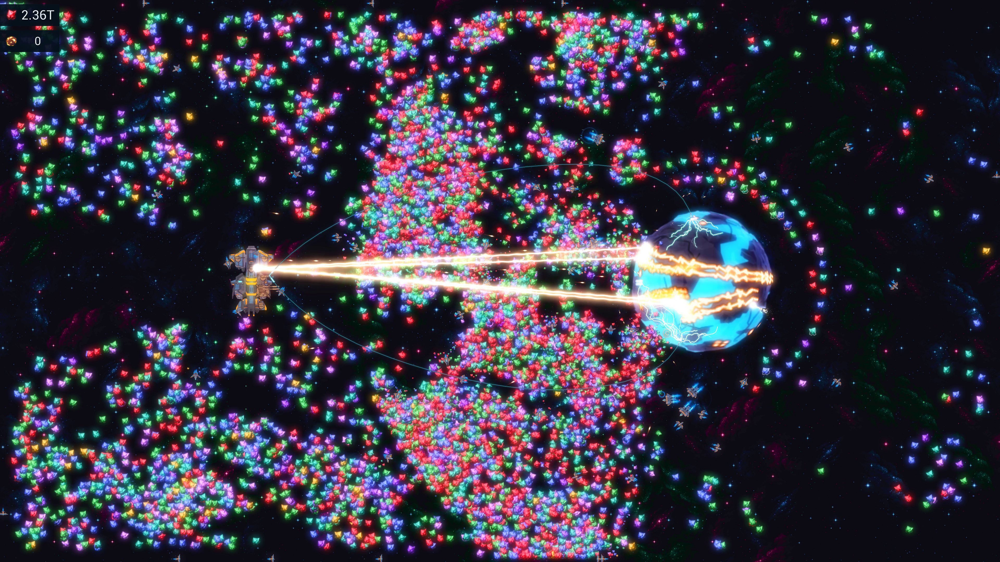
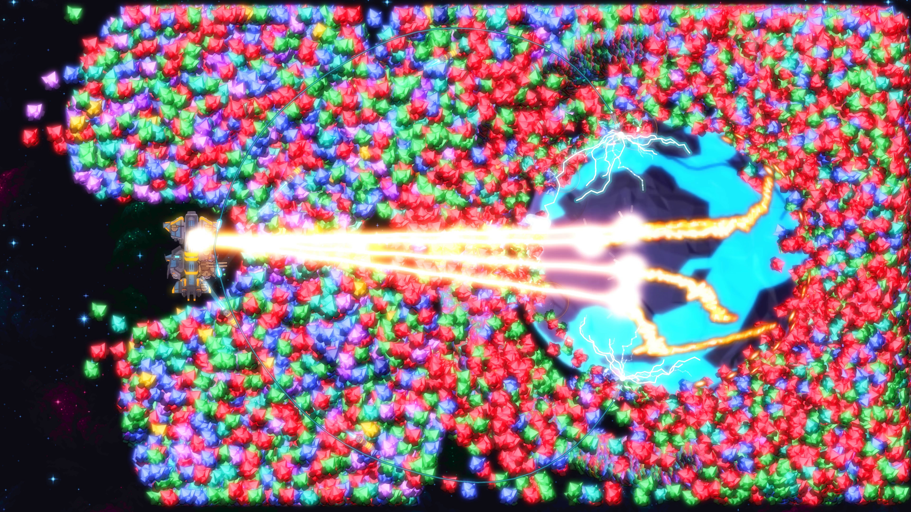
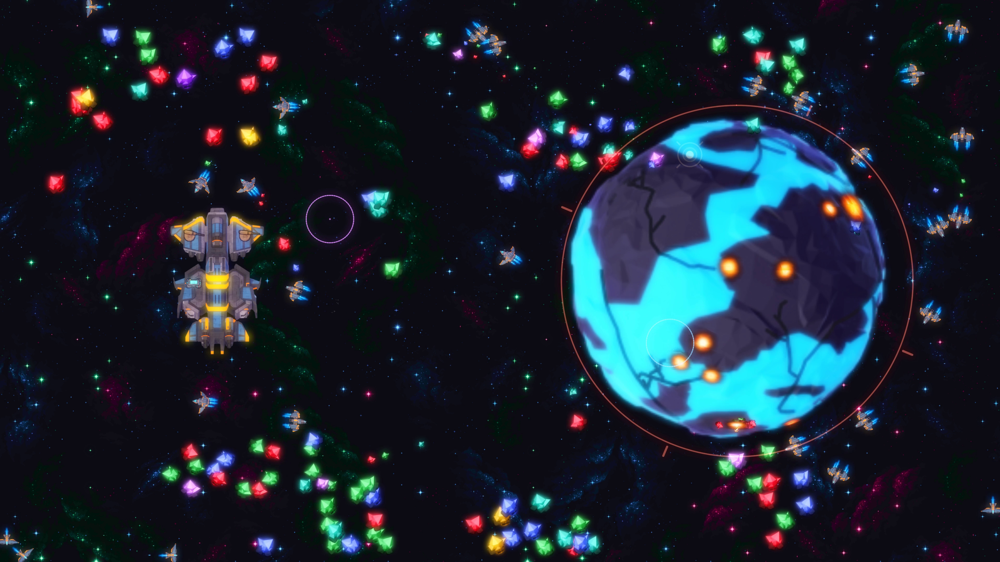
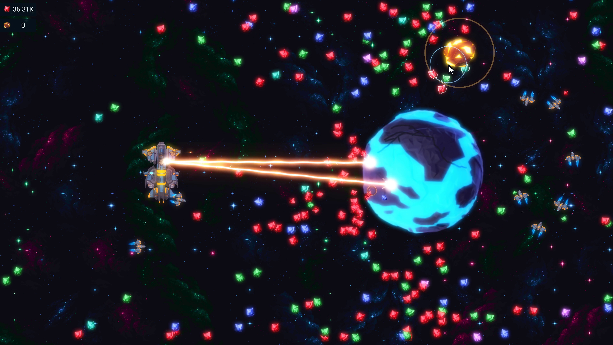
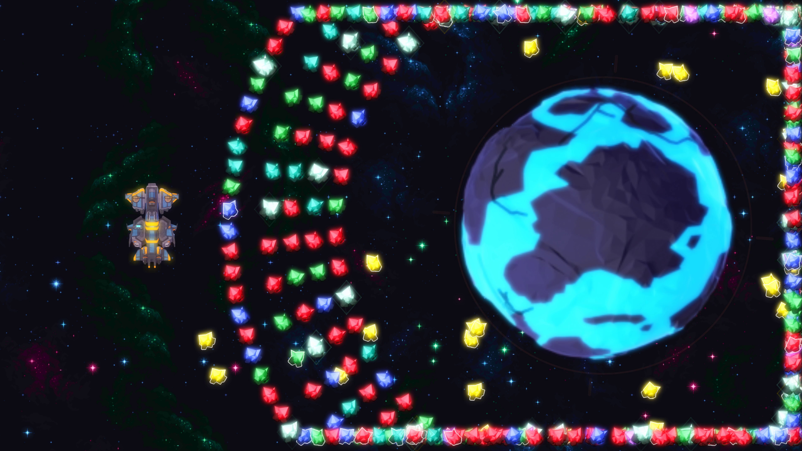
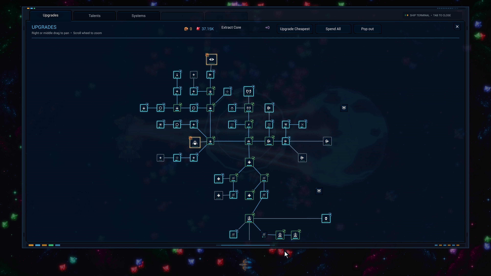
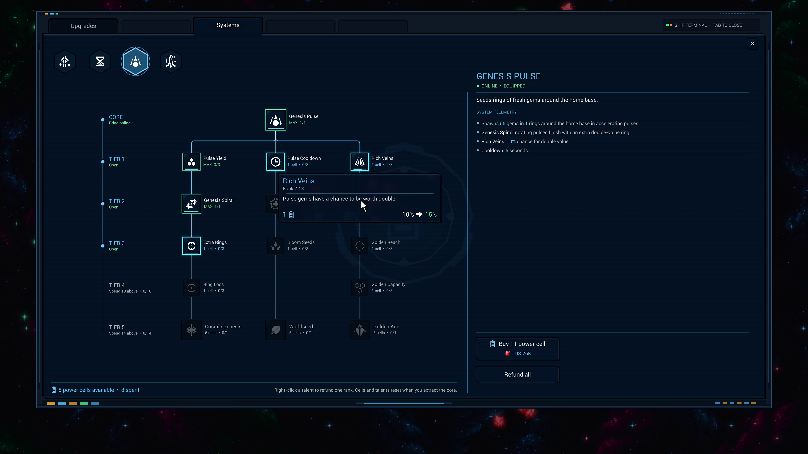
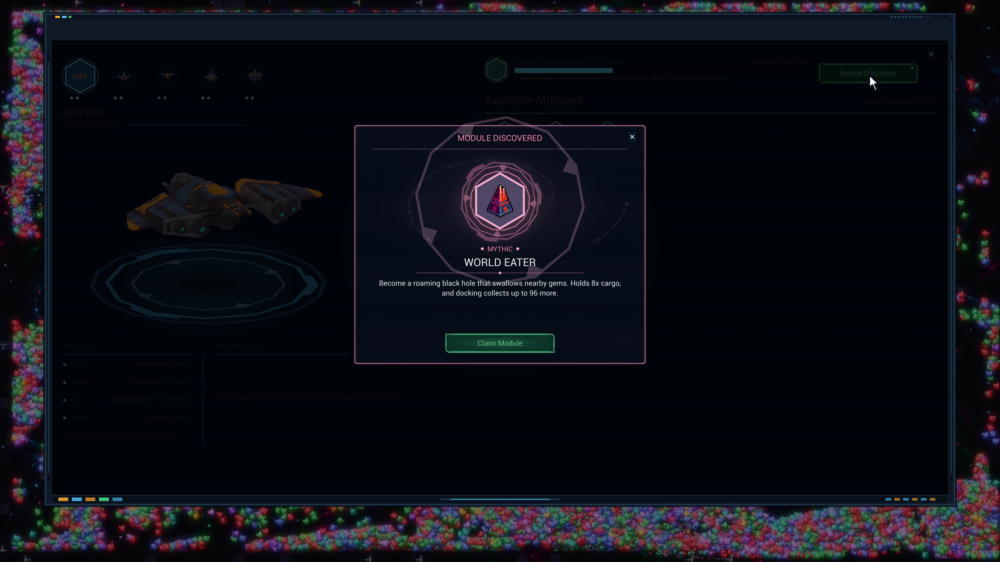
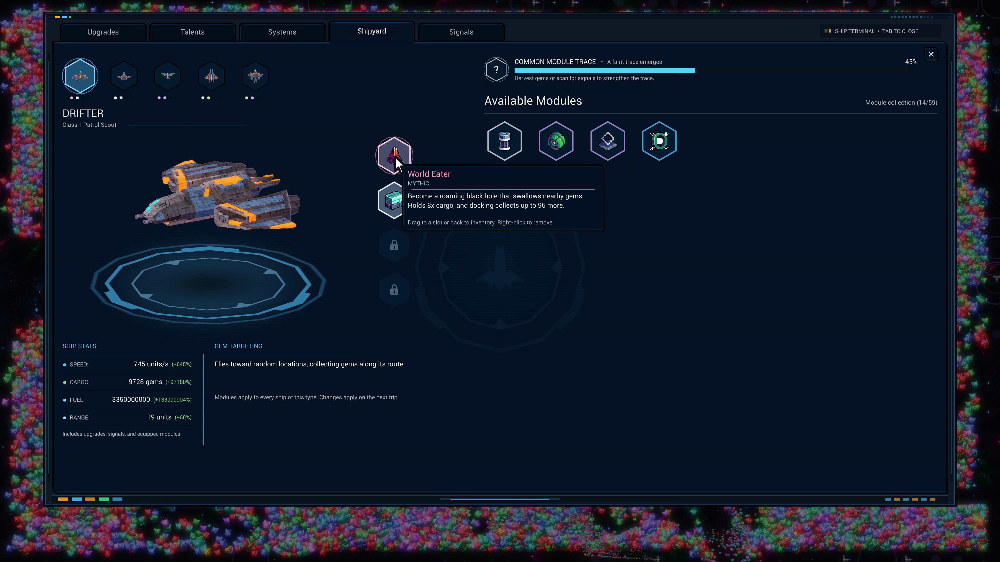
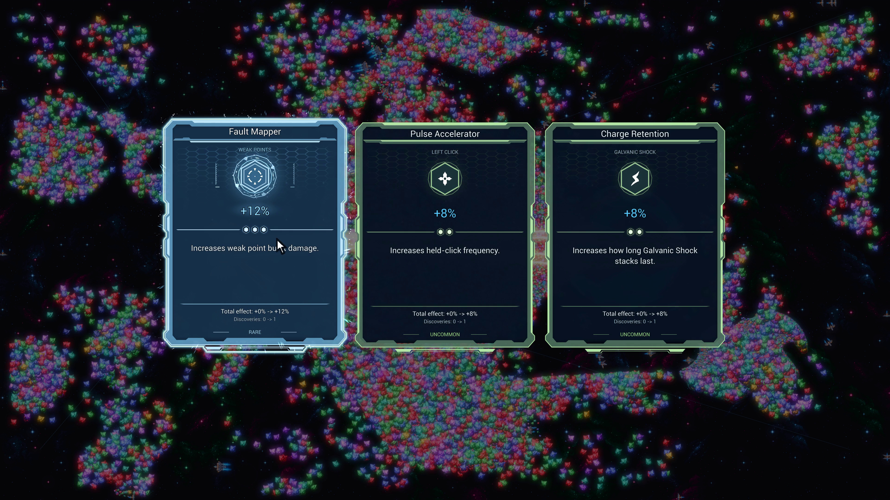
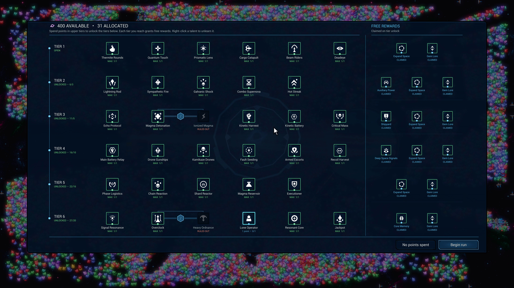